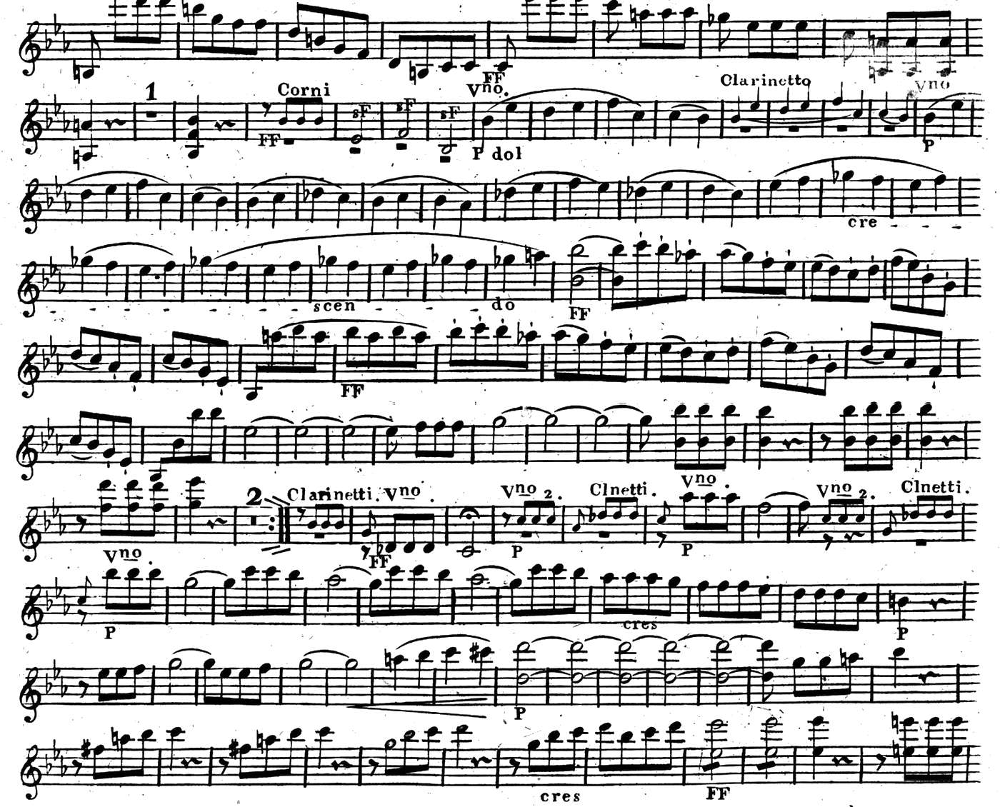
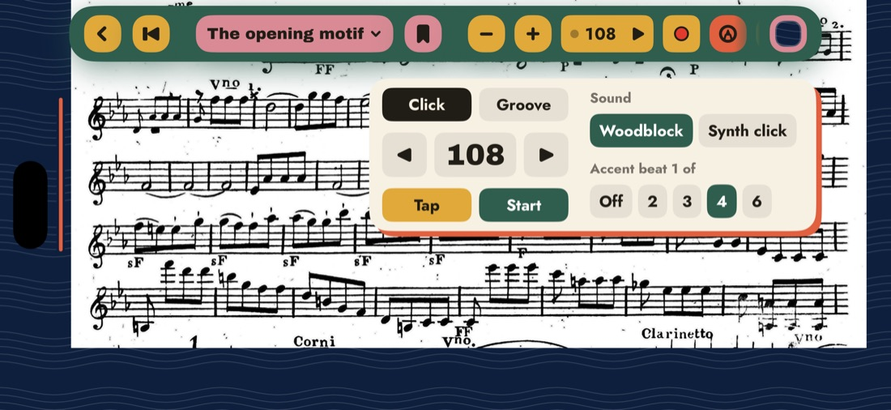

Big notes on a small screen.
Photograph the bars that keep tripping you up. Tap the first and last line. Then read them on your phone, on the stand, with both hands on your instrument. Three lines at a time, or zoom in until one line fills the screen and step along it. Nod, tap or say “next” to move on.
This page keeps time. Turn the sound on at the bottom.

Up to three lines, marked in the margin. A nod or tap moves on to the next three.
Use the camera, the document scanner, a photo you already took, or a PDF.
Segno finds each line of music, on your phone. Tap the line where your passage starts.
Tap where it ends. Your bowings, fingerings and pencil marks come with it.
Turn the phone sideways and read three lines at a time, or zoom in to one. On iPad and larger tablets you can also read a whole page.
Tap the music to move on, or go hands-free: nod and voice stay off until you switch them on, and nodding works with glasses. Tap the face to try one.
A small chin-lift turns the page. Works on iPhone, iPad and Android.
The showy ones are for the whole-page view, on iPad and larger tablets held upright. On a phone the lines just glide.
Pick a drum groove or a plain click, and tap the tempo in. This page runs on it: it is the bar at the bottom.
Eight grooves Or a plain click
Raise your eyebrows mid-bar and the drummer plays a fill. Uses the front camera, on iPhone, iPad and Android.
A singer holds your A, anywhere from 415 to 446 Hz, for as long as the breath lasts. A synth and a reed organ can take over. Here each stage lasts 5 seconds; in the app, 10.
Segno keeps your last three takes of each passage. Star the one worth keeping.
Your ink stays on the page in every view. Apple Pencil works on iPad.
Mark sections inside a passage and join separate parts into one. Export every page as a PDF with your ink on it.
iCloud keeps your iPhone and iPad together. On Android you can switch on a hidden Google Drive folder, over Wi-Fi only if you like.
Eight colour schemes come with the app. Pick one and this page wears it.
Each bar this page plays fills a day.
A stick man drops by your library now and then and walks along the rows. Some days he brings the dog.
No sign-up.No ads.No analytics.Pay once.
Sync is optional. It uses the iCloud or Google account you already have.